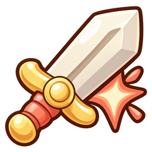
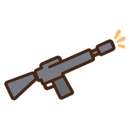

TECHNICAL CASE / UNITY · 1인 개발 · 개발 중
고양이 캡슐
디펜스.
게임을 직접 개발하며
반복 작업을 자동화했습니다.
기획부터 에셋 제작·전투 검증까지, 반복 작업을 자동화하는 AI 스킬 5개를 직접 만들었습니다.
강화와 재도전이 필요한
스테이지 밸런스
1스테이지에서 기본값을 정하고 실제 재화와 강화 상태를
이어받아 8스테이지까지 난이도를 조정했습니다.
- STAGE 1
기본값 고정
유닛 능력 · 강화 효과 · 강화 비용
- STAGE 2
성장과 난이도 조정
실패 보상 → 강화 → 재도전
- STAGE 3 → 8
성장 상태를 이어서 검증
잔액과 레벨을 유지하며 적·웨이브·보상 조정
후반 스테이지의 도전 횟수
각 50개 시드로 실행한 서로 다른 표본의 관측 결과입니다. 도전 횟수는 관측 한도에 도달한 사례도 포함합니다.
반복 작업을 자동화하는
AI 스킬을 만들었습니다.
기획·에셋 제작·전투 검증에 쓰는
5개의 AI 스킬을 제작했습니다.
잘못된 결과는 직접 검토해 다음 작업의 기준에 반영했습니다.
광택 있는 검 아이콘을
게임에 맞는 평면 라이플로 바꿨습니다.
캐릭터와 어울리지 않는 스타일을 지적하고 기준 이미지·외곽선·금지 표현을 명세에 적었습니다.


현재 스킬 정의와 프로젝트 교정 기록을 기준으로 정리했습니다. 모든 사용 기록이나 스킬별 수정 순서를 정리한 자료는 아닙니다.
이미 정산한 보상은
다시 저장하지 않습니다.
전투 상태는 로컬에서 계산하고 결과를 정산합니다.
클라이언트는 불필요한 저장 요청을 줄이고
서버는 런 ID별 정산 영수증으로 중복 지급을 막습니다.
- 01로컬 전투유닛 · 코인 · 웨이브↓
- 02최종 결과 제출런 ID + 보상 + 승패↓
- 03서버 트랜잭션진행도 + 정산 영수증↓
- 04서버가 확정한 상태 반영연결 복구 시 같은 ID로 재요청
변경이 없으면 생략
현재 버전과 저장된 버전이 같으면 새 저장을 시작하지 않습니다.
진행 중인 요청 재사용
이미 실행 중인 작업을 반환해 같은 요청이 중복 실행되는 것을 막습니다.
정상 단일 트랜잭션의 코드 경로 기준입니다. 재요청도 읽기와 함수 호출은 발생하며, 실제 청구액이나 비용 절감률을 측정한 수치는 아닙니다.
전투와 유닛 강화
캡슐을 뽑아 적을 막는 전투와
유닛을 강화하는 과정을 직접 녹화했습니다.